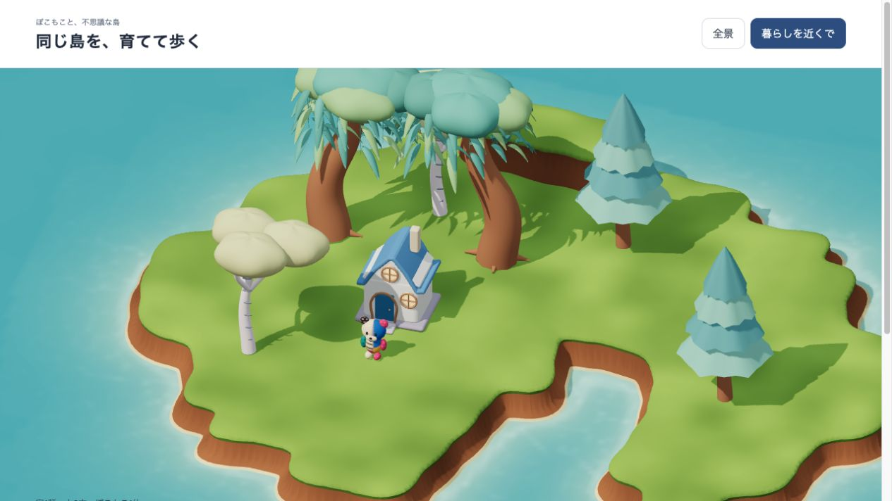
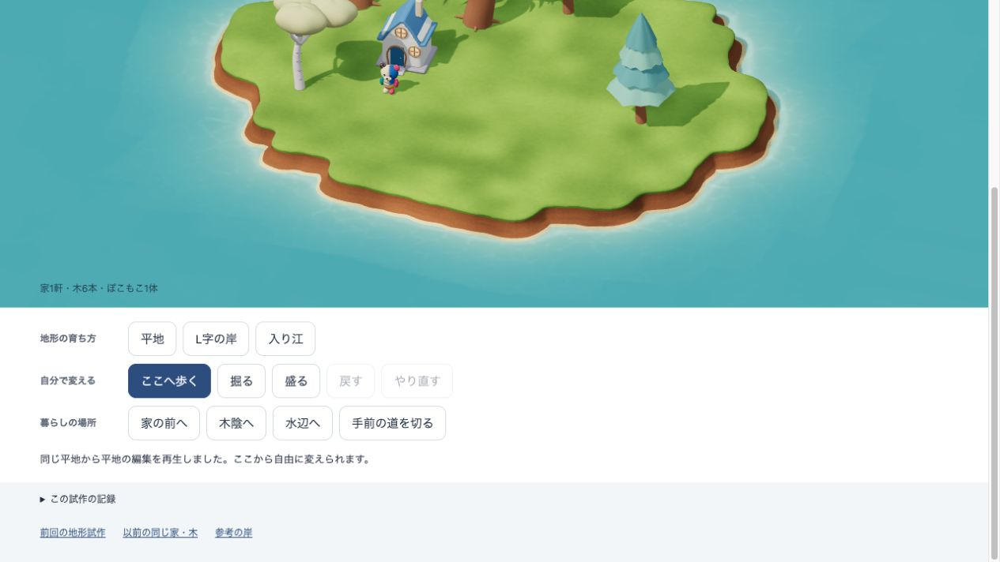
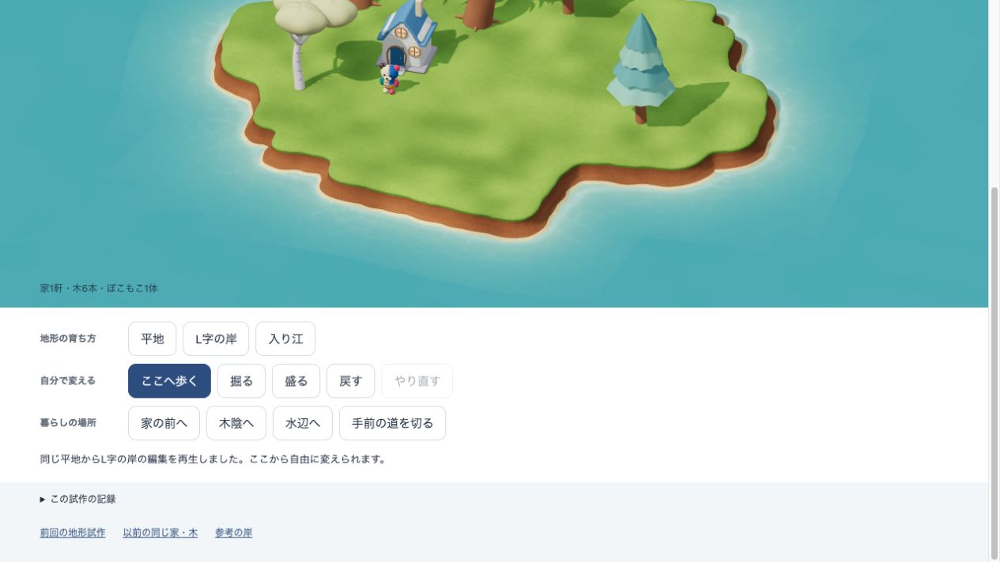
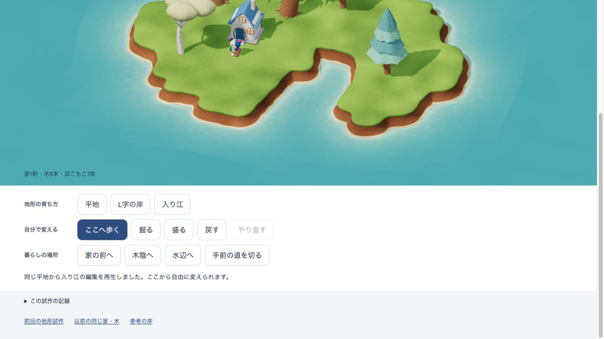
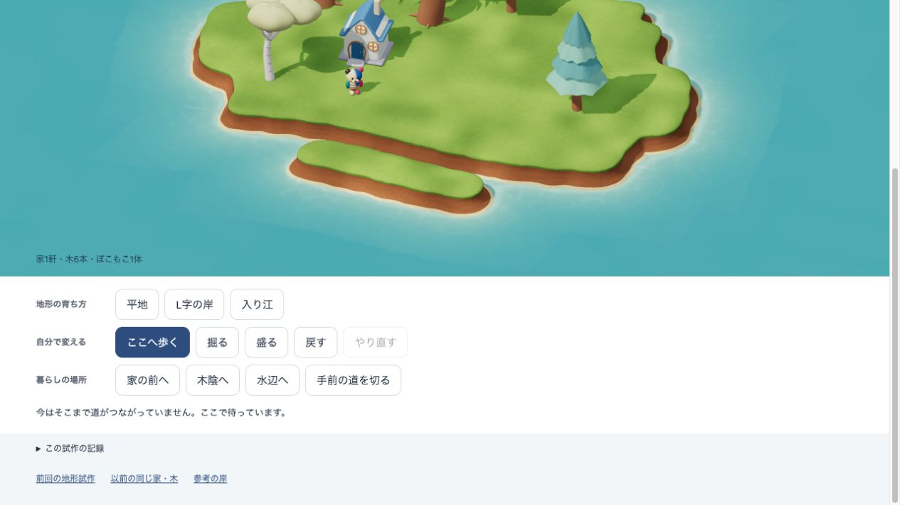
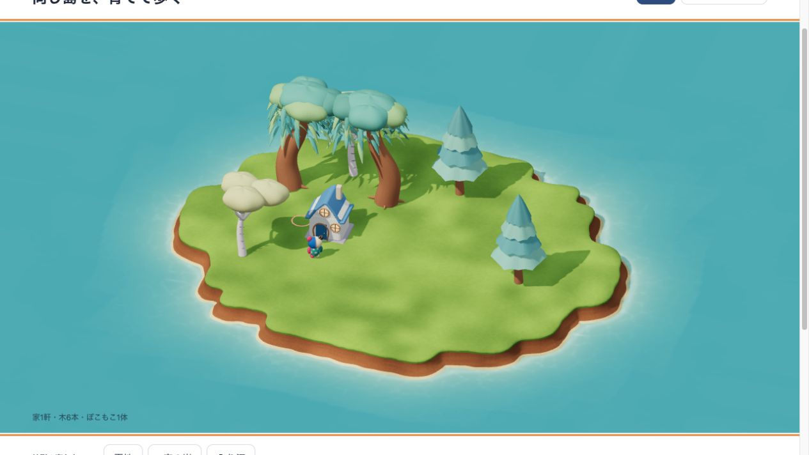
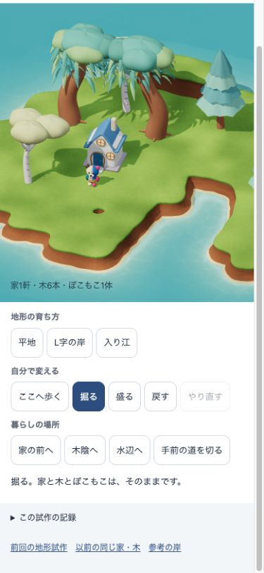

同じ家1軒・木6本で、岸を変える
同じ初期地形、同じ所有物・位置・大きさ・カメラから、実際に掘る・盛る操作を再生。編集に合わせて歩ける地面と経路も変わります。
触って確かめる → 細部の修正・検証記録
岸の仕上げを近景で比べる

修正前：土壁の縦筋、均一な草縁と砂浜。revision 5c5ed935e657af07修正後：三角形の大きさに左右されない陰影、素材ごとの細かな質感、幅に変化のある砂浜。revision 1dfbf01cee89df92同じ所有物で3つの地形

平地
家前から開けた岸へ。比較の出発点。
L字の岸
北の丘と、掘って開いた東の水面。
入り江
家と木陰に近い場所まで、水際が入り込む。実際の近景。物を消したり増やしたりせず、同じ地面で歩いて使う。編集しても、足場と暮らしが続く

道を切ると、その場で待つ。Undoで停止位置から歩き直す。
家や木の根元を壊す操作は拒否。元の地形と履歴を保つ。
狭い画面でも直接編集。Undo/Redoで入力の一致を確認。候補 lived-terrain / revision 1dfbf01cee89df92 / standalone-study-only。ローカルの制作検証であり、本人保存・通常配布には接続していません。画像だけで子どもの理解や再訪の合格とはしません。